D105 · 구름 설정 / 빛 커튼 검토
실제 렌더 캡처입니다. 기본 화면 통합과 품질 채택은 아직 TUNE입니다. RTX 원본 구도: high / full-resolution TAA / 75%. 최신 북유럽 6구도: 소프트웨어 렌더 / low / 25% 진단용이므로 고품질 결과로 평가하지 않습니다. 하단 고품질 소프트웨어 정지 캡처도 성능 증거는 아닙니다. 실패한 흰 화면 2장은 정상 결과에서 제외했습니다.
실시간 비교 · 상세 보고서 · 캡처 조건과 해시
basic300-ref54-r54-c42-s75-fullres-cloud-shafts-smaa
RTX still trial · ANGLE (NVIDIA, NVIDIA GeForce RTX 3070 (0x00002484) Direct3D11 vs_5_0 ps_5_0, D3D11)
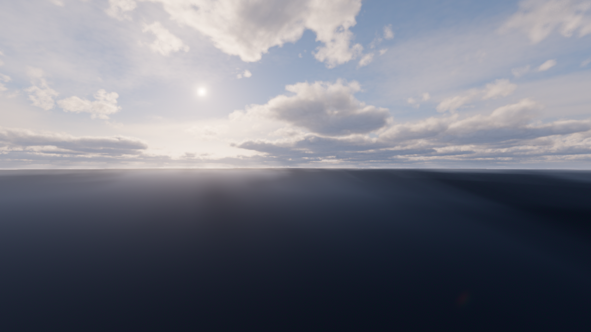
quality high, coverage 0.42, repeat [54, 54], layer base 750m; performance/quality approval separate.
basic300-ref54-r54-c42-s75-fullres-cloud-nosh-smaa
RTX still trial · ANGLE (NVIDIA, NVIDIA GeForce RTX 3070 (0x00002484) Direct3D11 vs_5_0 ps_5_0, D3D11)
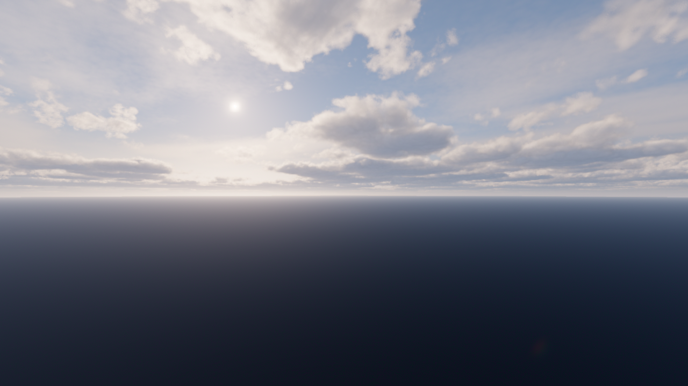
quality high, coverage 0.42, repeat [54, 54], layer base 750m; performance/quality approval separate.
north300-300-ref54-r54-c42-s75-fullres-cloud-shafts-smaa
RTX still trial · ANGLE (NVIDIA, NVIDIA GeForce RTX 3070 (0x00002484) Direct3D11 vs_5_0 ps_5_0, D3D11)
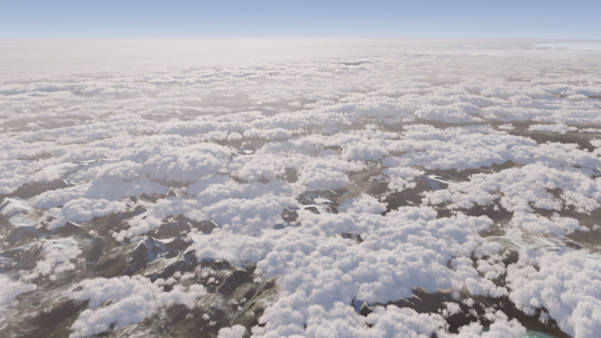
quality high, coverage 0.42, repeat [54, 54], layer base 5000m; performance/quality approval separate.
basic300-ref54-r54-c42-e10-s50-upscale-cloud-shafts-smaa
Software diagnostic · ANGLE (Microsoft, Microsoft Basic Render Driver (0x0000008C) Direct3D11 vs_5_0 ps_5_0, D3D11)
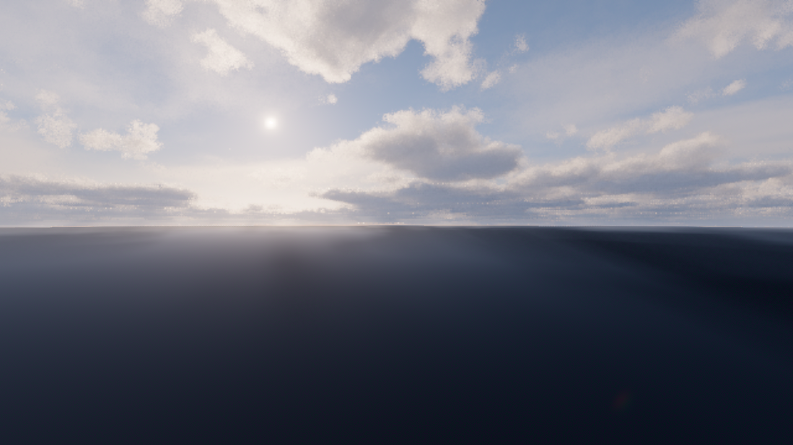
quality high, coverage 0.42, repeat [54, 54], layer base 750m; performance/quality approval separate.
north300-365-ref54-r54-c42-e10-qhigh-s50-upscale-cloud-shafts-smaa
Software diagnostic · ANGLE (Microsoft, Microsoft Basic Render Driver (0x0000008C) Direct3D11 vs_5_0 ps_5_0, D3D11)
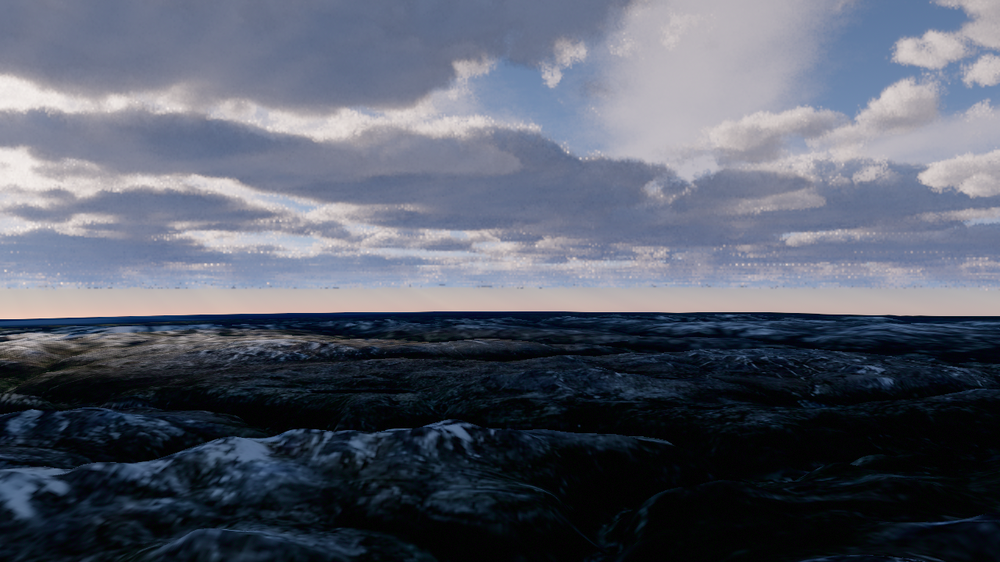
quality high, coverage 0.42, repeat [54, 54], layer base 8000m; performance/quality approval separate.
basic300-ref54-r54-c42-e10-qlow-s25-upscale-cloud-shafts-smaa
Software diagnostic · ANGLE (Microsoft, Microsoft Basic Render Driver (0x0000008C) Direct3D11 vs_5_0 ps_5_0, D3D11)
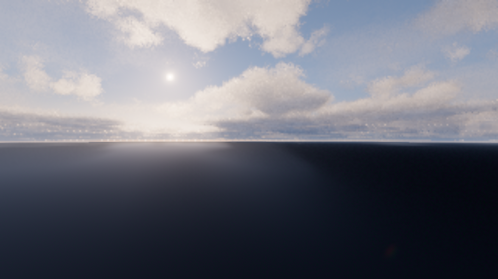
quality low, coverage 0.42, repeat [54, 54], layer base 750m; performance/quality approval separate.
basic300-ref54-r54-c42-e10-qlow-s25-upscale-off-shafts-smaa
Software diagnostic · ANGLE (Microsoft, Microsoft Basic Render Driver (0x0000008C) Direct3D11 vs_5_0 ps_5_0, D3D11)
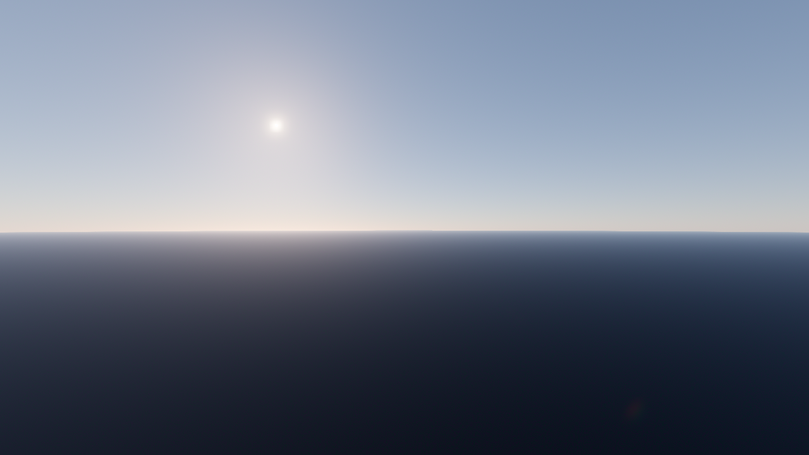
quality low, coverage 0.42, repeat [54, 54], layer base 750m; performance/quality approval separate.
basic300-ref54-r54-c42-e10-s25-upscale-off-shafts-smaa
Pre-preset wiring diagnostic · ANGLE (Microsoft, Microsoft Basic Render Driver (0x0000008C) Direct3D11 vs_5_0 ps_5_0, D3D11)

quality low, coverage 0.42, repeat [54, 54], layer base 750m; performance/quality approval separate.
basic300-ref54-r54-c42-e16-qlow-s25-upscale-cloud-shafts-smaa
Unsettled contrast trial; not adopted · ANGLE (Microsoft, Microsoft Basic Render Driver (0x0000008C) Direct3D11 vs_5_0 ps_5_0, D3D11)
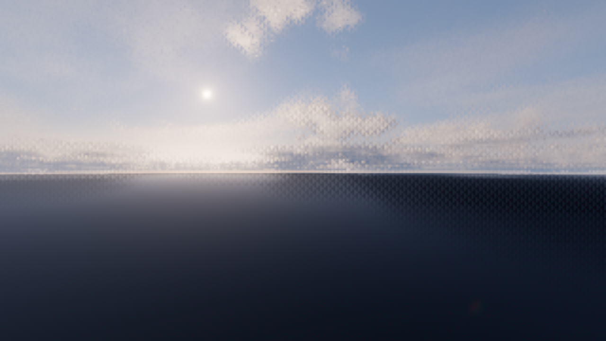
quality low, coverage 0.42, repeat [54, 54], layer base 750m; performance/quality approval separate.
basic3500-upscale-cloud-noaa
Pre-settings diagnostic · ANGLE (NVIDIA, NVIDIA GeForce RTX 3070 (0x00002484) Direct3D11 vs_5_0 ps_5_0, D3D11)
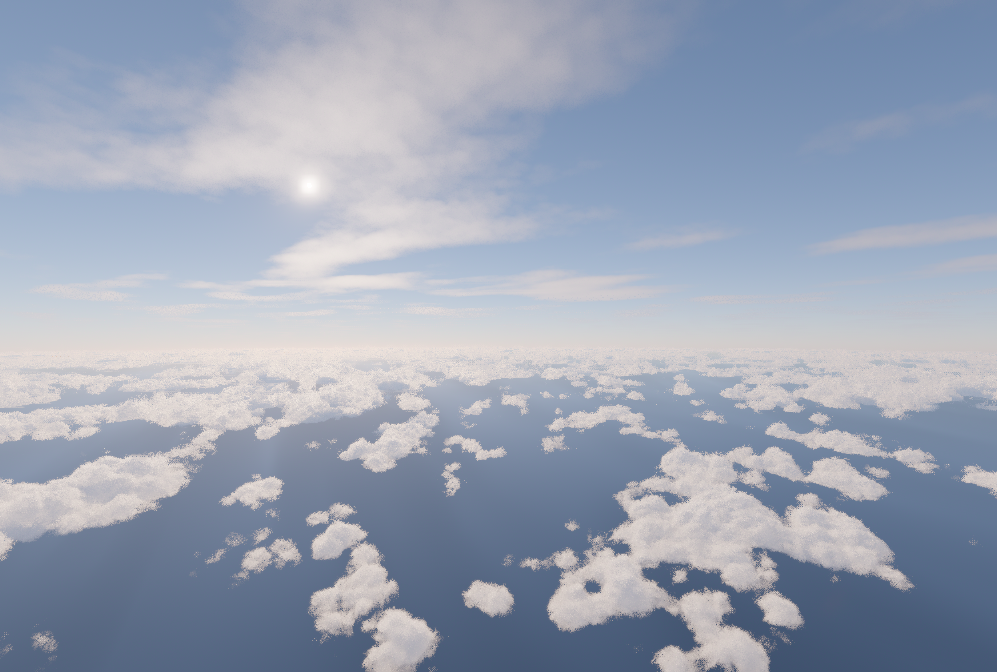
quality high, coverage 0.3, repeat None, layer base 750m; performance/quality approval separate.
north300-265-ref54-r54-c42-e10-qlow-s25-upscale-cloud-shafts-smaa
Software diagnostic · ANGLE (Microsoft, Microsoft Basic Render Driver (0x0000008C) Direct3D11 vs_5_0 ps_5_0, D3D11)
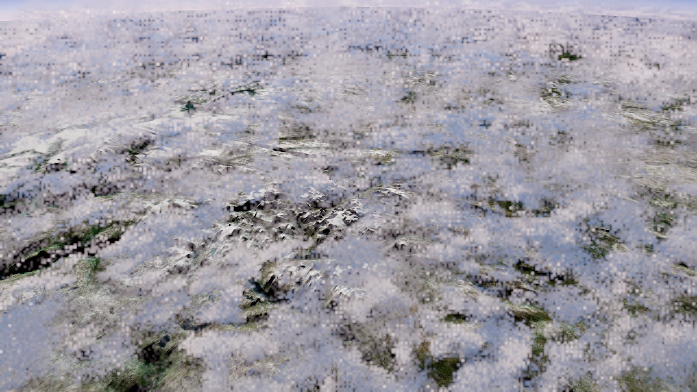
quality low, coverage 0.42, repeat [54, 54], layer base 8000m; performance/quality approval separate.
north300-285-ref54-r54-c42-e10-qlow-s25-upscale-cloud-shafts-smaa
Software diagnostic · ANGLE (Microsoft, Microsoft Basic Render Driver (0x0000008C) Direct3D11 vs_5_0 ps_5_0, D3D11)
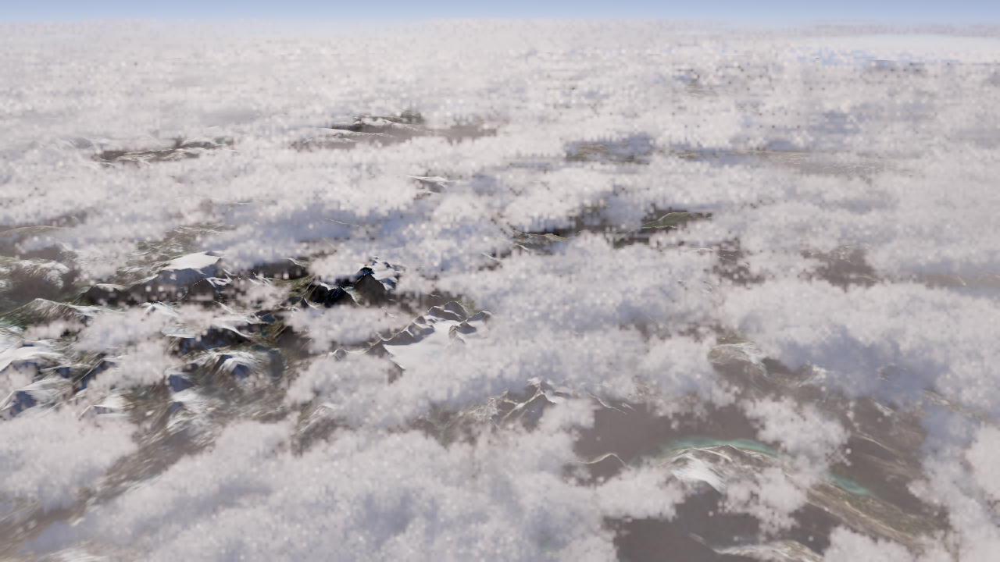
quality low, coverage 0.42, repeat [54, 54], layer base 8000m; performance/quality approval separate.
north300-300-ref54-r54-c42-e10-qlow-s25-upscale-cloud-shafts-smaa
Software diagnostic · ANGLE (Microsoft, Microsoft Basic Render Driver (0x0000008C) Direct3D11 vs_5_0 ps_5_0, D3D11)
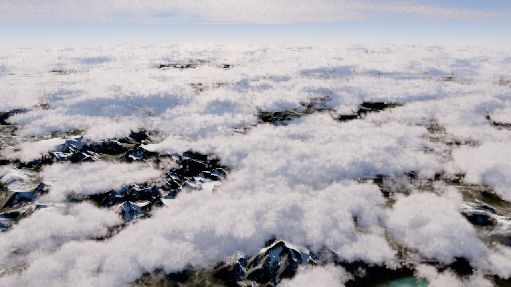
quality low, coverage 0.42, repeat [54, 54], layer base 8000m; performance/quality approval separate.
north300-320-ref54-r54-c42-e10-qlow-s25-upscale-cloud-shafts-smaa
Software diagnostic · ANGLE (Microsoft, Microsoft Basic Render Driver (0x0000008C) Direct3D11 vs_5_0 ps_5_0, D3D11)
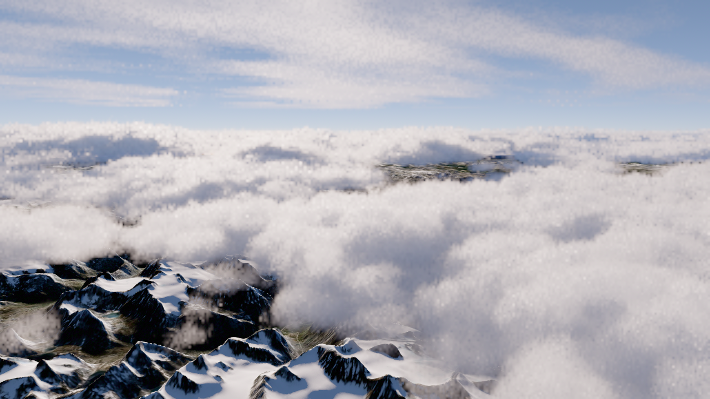
quality low, coverage 0.42, repeat [54, 54], layer base 8000m; performance/quality approval separate.
north300-345-ref54-r54-c42-e10-qlow-s25-upscale-cloud-shafts-smaa
Software diagnostic · ANGLE (Microsoft, Microsoft Basic Render Driver (0x0000008C) Direct3D11 vs_5_0 ps_5_0, D3D11)
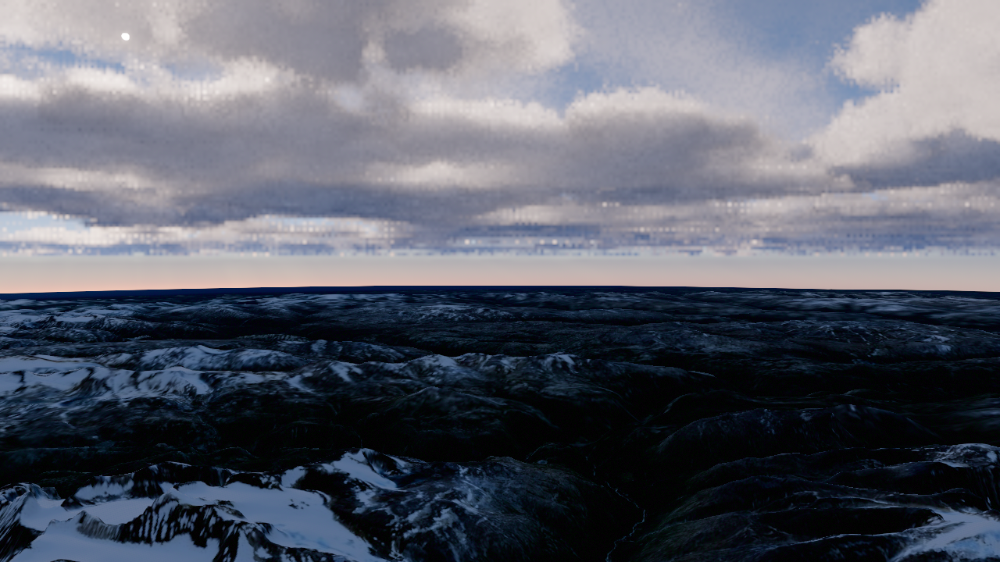
quality low, coverage 0.42, repeat [54, 54], layer base 8000m; performance/quality approval separate.
north300-365-ref54-r54-c42-e10-qlow-s25-upscale-cloud-nosh-smaa
Software diagnostic · ANGLE (Microsoft, Microsoft Basic Render Driver (0x0000008C) Direct3D11 vs_5_0 ps_5_0, D3D11)
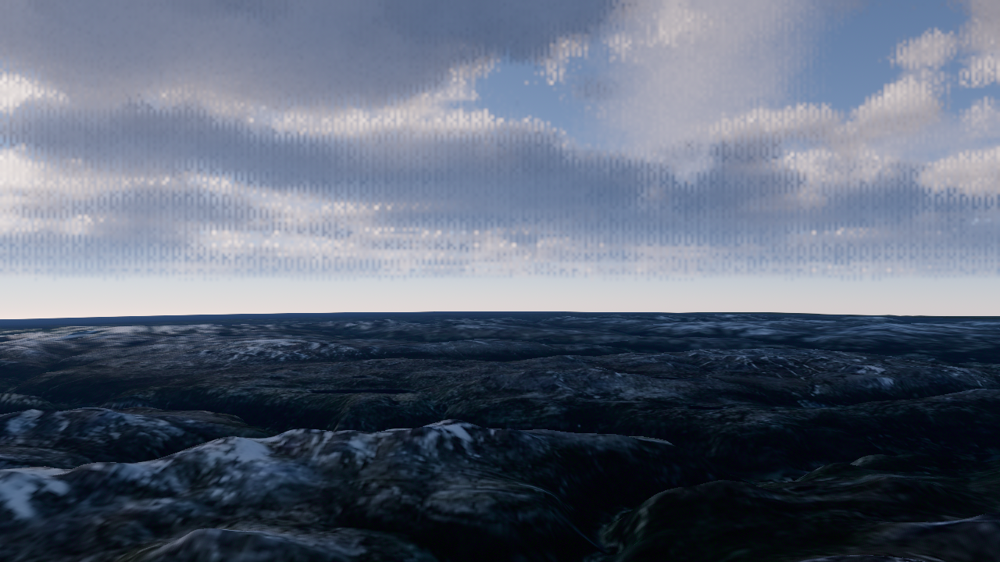
quality low, coverage 0.42, repeat [54, 54], layer base 8000m; performance/quality approval separate.
north300-365-ref54-r54-c42-e10-qlow-s25-upscale-cloud-shafts-smaa
Software diagnostic · ANGLE (Microsoft, Microsoft Basic Render Driver (0x0000008C) Direct3D11 vs_5_0 ps_5_0, D3D11)
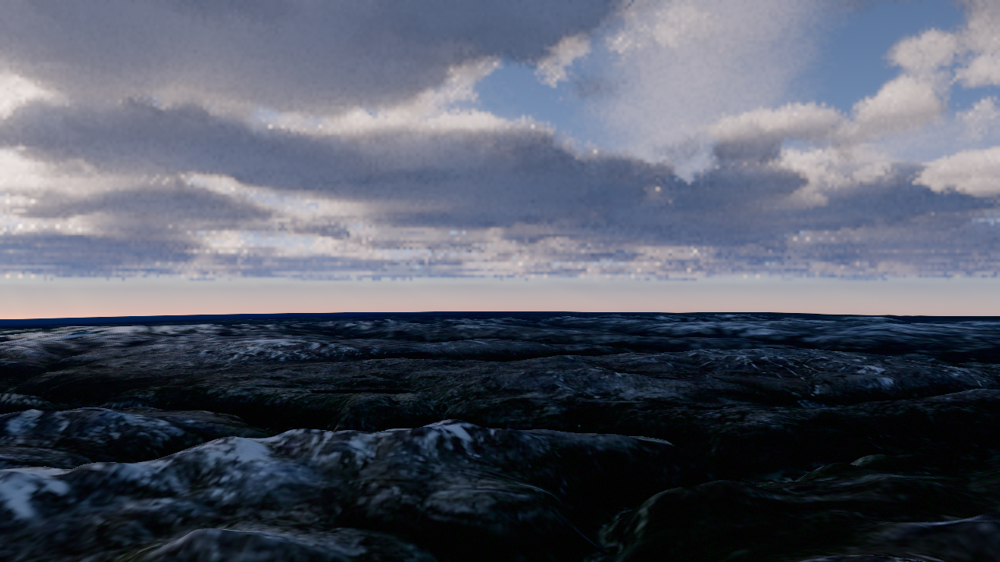
quality low, coverage 0.42, repeat [54, 54], layer base 8000m; performance/quality approval separate.